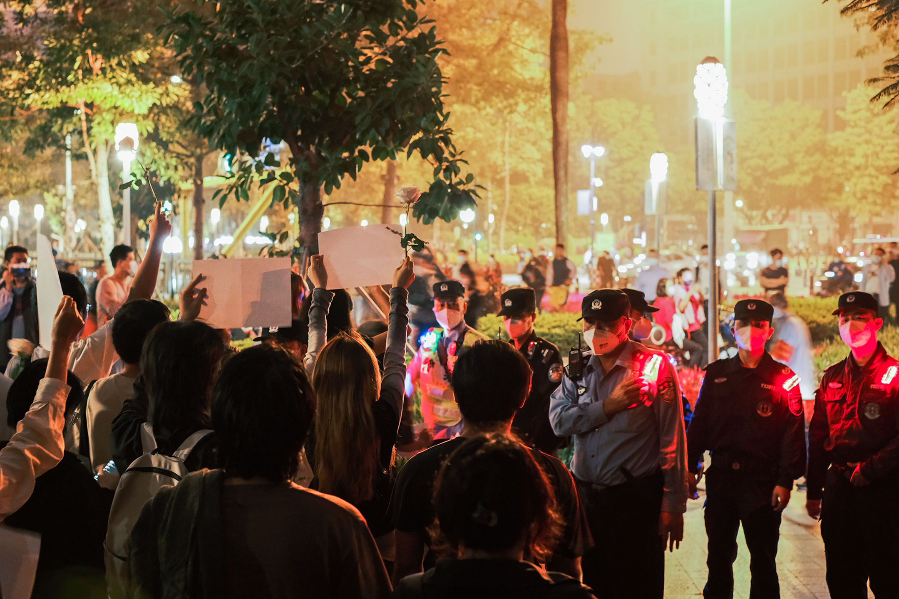
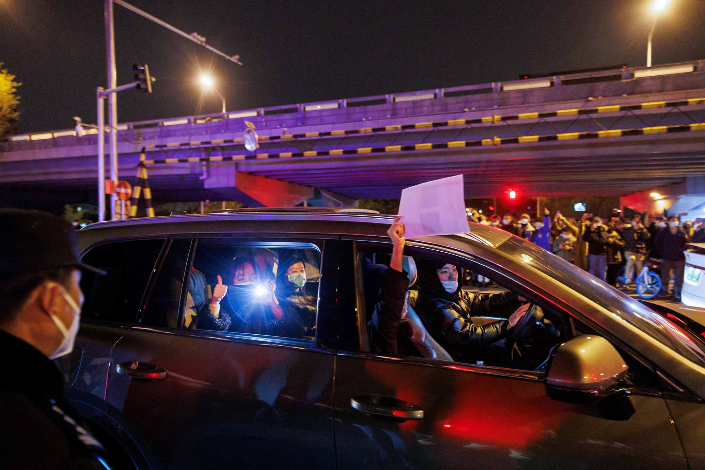
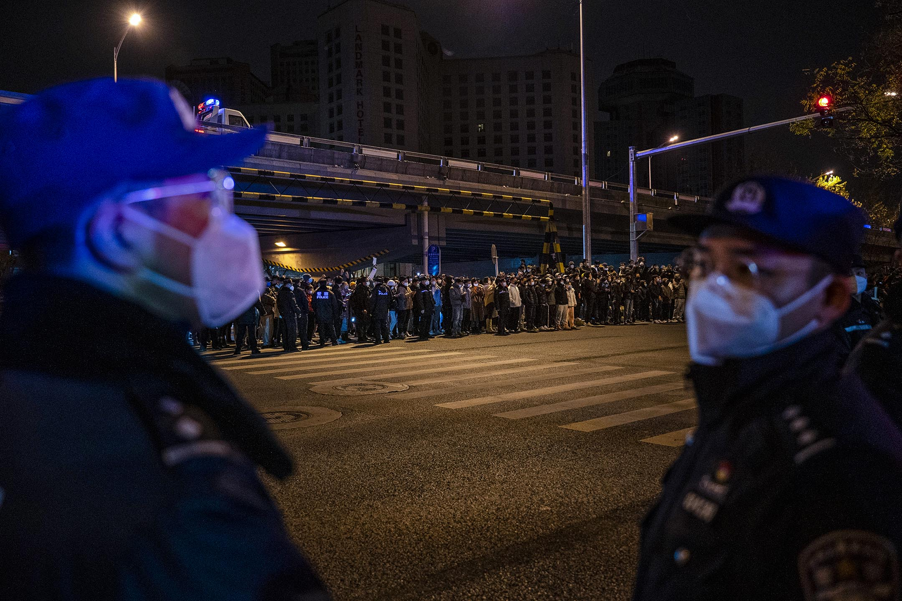

封控抗議潮示威者被警方拘留、回訪，多人疑「失聯」｜端傳媒 Initium Media
律師指，抗議者多數面對被約談、行政拘留和刑事拘留，「失聯的狀況是很動態的，實際上抓的人比我們接觸到的多很多。」

Figure 1: 2022年11月27日晚上，廣州有市民聚集，手持白紙，表達對烏魯木齊火災的哀悼和對防疫防控措施的抗議。攝影：伯謀
端傳媒編輯部
刊登於 2022-12-10
本文更新於12月12日
2022年11月24日，遭遇逾百日封城的烏魯木齊燃起一場大火，至10人死亡、9人受傷，事件震盪中國大陸，引發各地人民對防疫政策的示威反抗。 而後數日，中國的大學校內和城市街頭，紛紛出現不同形式的抗議行動，人們哀悼烏魯木齊逝者，也喊出「不要封控 要自由」「民主法治 表達自由」「放人」等口號。抗議仍在全球多個城市蔓延。
12月2日《南華早報》報導，此前一日習近平在會見到訪北京的歐洲理事會主席米歇爾（Charles Michel）時表示，抗議者主要是學生，他們在三年疫情後感到「沮喪」。這是習在面對社會抗議時的罕見表態。此後，中國防疫政策發生巨大轉向，多地停止 常態化核酸、取消進出公共場所時需要出示核酸陰性證明的要求。12月7日，中國推出「新十條」，意味著防疫政策進一步放開。
在防疫政策發生巨變的同時，封控示威潮的秋後算賬仍在進行。自抗議行動爆發以來，有警察進入大學，疑有學校將學生行動定性為境外勢力，有學生疑似處 於失聯狀態；不少參與街頭抗議的市民在現場被警方帶走，疑有人遭警方以暴力手段對待；有市民在抗議行動後被警方打電話回訪，或被直接找上門。
參與廣州抗議行動的W對端傳媒表示，他與朋友一起被帶去警察局，被使用暴力手段和拘留。從警察局出來後，W的朋友的微信群聊和朋友圈功能馬上被停 用。W則在之後被警察要求見面「回訪」。當時W正在公司上班，提出希望在電話中對話，但警察堅持要見面。告知對方地址後，警察來到公司找W。W感到憤怒， 向對方表示，針對被使用暴力手段與拘留的情況，沒有獲得任何理由與解釋。W說，回訪的警察面對質問，感到尷尬，沒有多說什麼，「拍了兩張回訪照片就走了， 表示他們也是接到這樣的任務。」
W還指，除了廣州，在其他城市的朋友，也有人被後續回訪，有人半夜遭警方上門問話。
「最近我們這兒和之前比起來翻天覆地。不驗核酸但仍需看綠碼，不知道意義在哪裏。全國因為疫情抗議幾天，新冠突然就威力驟減毫無威脅，朋友圈開始出 現感謝國家保護三年的動態，放開紛紛誇讚政府政策與時俱進，而抗議者紛紛淪落為憤青、莽夫、境外勢力、被煽動、叛國者等等，而真的反對的聲音全都被隔絕在 各個角落裏。」W說，「這樣的境況讓我很悲哀，以後仍然會有各種各樣的問題和困難出現，還會出現無數個三年循環往復。」
參與北京11月27日亮馬橋悼念抗議行動的J說，當天她與數位朋友在前往現場前，有意識地先將翻牆軟件、telegram等APP卸載，有朋友換上備用手機。但J發現，現場的人群中，有許多人並沒有電子設備的安全意識。
J議述，當天曾路過「奇怪的大車」，大車停靠在馬路邊，大家當時並不清楚其用途。事後，有朋友在「被喝茶」後才意識到，這輛大車可能是信號車，用來捕捉路過的人的手機信號。根據《紐約時報》報導，現場有帶有天線的小型設備，裝作手機信號塔，連結所有經過人士的手機，記錄下數據供警方檢查。此外，J在現場看到，警方會配戴執法記錄儀設備，這是一款集實時攝錄、照片和錄音等功能的設備。

Figure 2: 2022年11月28日，北京，為烏魯木齊火災受害者守夜後的集會上，一名車內的人拿著一張白紙抗議。
在J看來，亮馬河現場氣氛並不緊張，警方只做人牆，不與抗議者有任何互動，隔著四五米。反而是外媒記者受到更多關注。直到行動後期，有便衣進入人群，喊著「行了行了回家了」，經過數次分流，人們最終散去。
J在事後第三天接到了警察的電話。對方叫了她的名字，開門見山問她有沒有去過亮馬河。J向警察確認亮馬河的具體位置，詢問是否在三里屯附近，得到了 肯定的答案。對方又問她到底有沒有去過，J稱當天確實和朋友在三里屯附近逛街。對方便不再繼續問了，表示「那沒事了」。翌日，J又接到了警察的電話，詢問 了類似的問題。J當即表示前一天已經和他們交代過了，讓其自行查看，便掛了電話。
J也有不少朋友接到了警方電話。據其總結，電話基本是由居住地派出所民警打來的，一般會先核實名字，再問有無去過亮馬河。若回答「去過」，則會繼續 確認時間，是否是27日。J和朋友交流發現，有些警察會說得比較直接，提及當天那裏有「遊行」，有的則比較隱晦，稱「集會」或「有一幫人」。有朋友回答那 天只是路過，也會被追問和誰去、路過做了什麼，並被要求去派出所做筆錄。
不過，J稱有朋友以「住得遠」或是「已不在北京」為由拒絕去派出所，警方便也沒辦法，便作罷。也有朋友說自己「沒有核酸」，對方則表示不用進派出所內，在門口聊即可。
一位參與上海抗議行動的被捕者A在釋放後表示，警方在現場的抓捕策略，一般是由五六人一擁而上抓住落單人士，有人在一旁使用高頻閃光燈配合，以此阻 擋其他人士的視線和對抓捕行動進行拍攝。A還指，若被捕者有「一點點肢體動作和任何一句話」都會被視為反抗。A曾遭到警方毆打及辱罵。
A還表示，被捕人士先會被送至一個中轉點，手臂被寫上編號標註，並被要求交出身上的物品。而後，中轉點的人再被送到不同派出所。在派出所，被捕人士 先要做抗原測試，被搜身，上繳個人物品，而後需要穿戴防護服，再做生物信息採集等。A表示，做完筆錄和口供後，若要寫悔過書，說明「基本上沒事了，24小 時之內可以出去」。
A說自己遇到的派出所民警、辦案人員全程態度溫和，沒有為難被捕者。不過，Twitter上其他人士於12月3日發帖指，疑有上海的被捕者，在派出 所被毆打，有人出現腦震盪的症狀，有人被扇耳光和踢肚子；有女性被捕者被要求脫光衣物檢查。這位人士還指，被捕者在派出所期間被要求不能睡覺、不能說話， 十分飢餓的情況下才會給幾片麵包。這位人士的Twitter帳號目前狀態為「被鎖」，無法顯示內容。

Figure 3: 2022年11月28日，北京，抗議中國政府清零政策期間，警察站在示威者對面。
此外，網絡上仍不斷流傳著其他參與抗議行動後的失聯者信息。根據民生觀察12月7日的文章及端傳媒整理的信息，第一個出現抗議行動的大學南京傳媒學 院，有數名學生被帶走。在上海，流傳參與烏魯木齊中路悼念活動的魏海「失蹤」，其朋友將他此前交代的事發經過筆記發布在網絡上，筆記寫到：「我沒有設想過 今夜會發生什麼事情，也沒有帶有除了默哀以外的任何目的，我只是希望可以有一個地方去祭奠死去的人們。」在武漢，11月27日，大量人士於漢正街要求解 封，一位名為景雪琴的人士，在現場圍觀聲援，因向警方質問抓人理由而被捕，被行政拘留數天。據景講述，當晚約有25人被抓。在廣州，12月4至5日，傳出 數十位曾到訪海珠廣場的年輕人被警方帶走，他們的身分是公益人士、藝術工作者等，一些人在24小時後被釋放。網傳廣州一位關注社會平等議題的年輕人楊紫 荊，12月4日遭警方和便衣闖入家中，強行搜查電子設備，進行口頭傳喚後，在12月5日警方發出刑事拘留通知書，指其涉嫌尋釁滋事。在成都，有抗議人士被 關在派出所數日，其收到刑事拘留通知書的母親，專程從江蘇坐火車前來送衣物。
大陸多個城市爆發悼念和抗議行動後，火花蔓延至香港。有抗議人士在香港數間大學和街頭發起行動，足跡遍及香港大學、香港中文大學、中環、旺角和維園 等。抗議者多以手舉白紙默站和唱歌等方式表達反對聲音，也有人在大學校內張貼海報。在香港大學、中環和旺角的抗議行動，均有警員到場，抄下抗議者的身份 證。在維園的抗議者獨身一人，亦被登記身份證，而後疑遭便衣警員跟隨。據悉，有在香港參與抗議行動的人士，其個人資料疑被傳送至大陸有關部門。
長期關注人權議題的律師S，在抗議封控潮發生後，接到十多位參與抗議行動的人士的法律諮詢。S表示，抗議者多數面對被約談、行政拘留和刑事拘留，有人一度失聯，但之後被釋放，「失聯的狀況是很動態的。實際上抓的人比我們接觸到的多很多。」S說。
「行政拘留」屬於治安管理處罰法，一般最嚴重可行政拘留15天，關押在拘留所，這是針對不算犯罪的違法行為所做出的處罰；「刑事拘留」則屬於工具性 的功能，是為保障刑事案件能進行偵查起訴的強制措施。S觀察，若抗議者是喊口號、「特別出頭的」，或在局部過程中有劇烈反抗，被視為組織者、有更積極參與 的人，可能會被刑事拘留。
根據被約談的抗議人士的經驗，S總結官方對抗議者有兩種看法，一種是極端的、思想偏激的或是社會另類，基於不滿的心理而聚眾；一種是認為抗議者無 知、受蠱惑，或是有智力障礙，矮化其抗議的價值和訴求。S表示，目前官方仍用老一套的思維，「還在用顏色革命、拿錢辦事、境外勢力的敘事去解讀，他們對年 輕人的抗議形式不理解，還停留陳舊的管控思維，但這次民眾、年輕人上街的需求是自發的，是社會心理上某種同理被觸發。」
本刊載內容版權為端傳媒或相關單位所有，未經端傳媒編輯部授權，請勿轉載或複製，否則即為侵權。